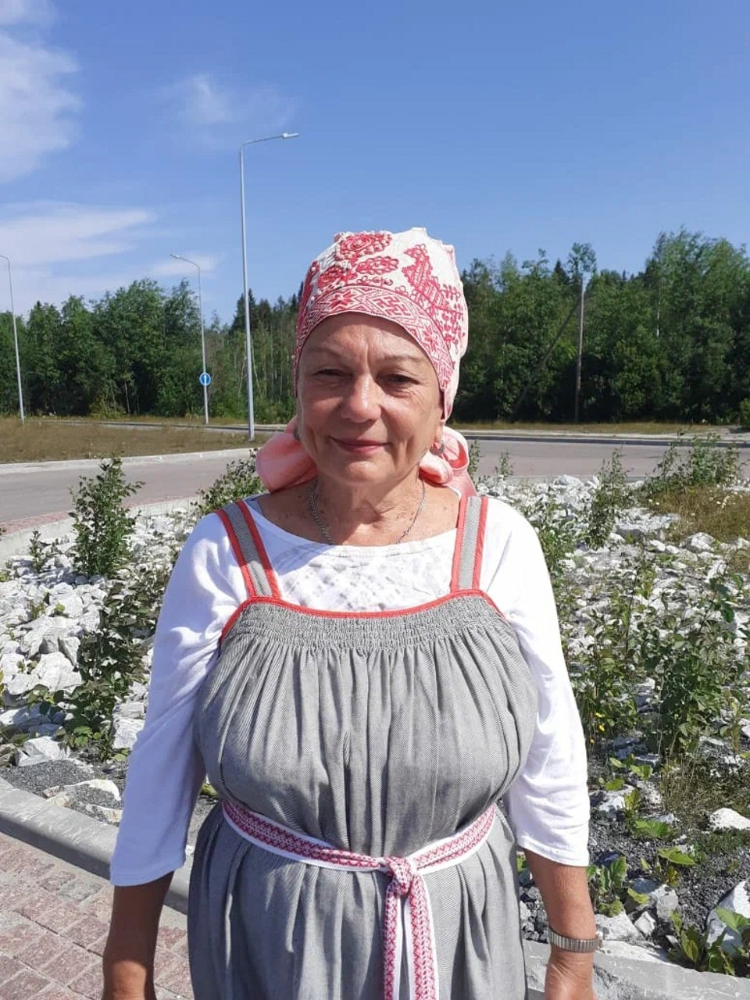

Наши гиды
Работаем с образованными, сертифицированными профессионалами, которые любят свое призвание
Анастасия Гетманова
Стаж 25 лет
Образование: музыкальное, историческое, культурологическое, философско-богословское.
Образование: музыкальное, историческое, культурологическое, философско-богословское.
"Хороший гид должен быть поэтом, а этому нельзя научить. Это
рождается из любви к людям, с которыми работаешь, и из любви к
земле, о которой рассказываешь..."
Андрей Панин
Стаж 15 лет
"Больше всего в жизни я люблю две вещи: путешествовать и
рассказывать интересные истории друзьям. Я уверен, что только
путешествия дают нам возможность понять и увидеть мир, в котором
мы живем, а следовательно, и самих себя."
Елена Лихачева
Стаж 19 лет
Образование: гид-переводчик и сертифицированный экскурсовод горного парка «Рускеала».
Образование: гид-переводчик и сертифицированный экскурсовод горного парка «Рускеала».
"Мне нравится работать с людьми, которые находятся на отдыхе: они
спокойны и расслаблены. Мне приятно этому способствовать."
Елена Макарычева
Стаж 23 года
"Люблю проводить время с семьей и путешествовать в дальние
страны."

Елена Федорова
Стаж 24 года
Образование: международные экономические отношения и курсы экскурсоводов.
Образование: международные экономические отношения и курсы экскурсоводов.
"Люблю цветы и на дачном участке создаю свой парк Монрепо. А что
это за парк - узнаете в наших турах!"
Ирина Дильмеева
Стаж 10 лет
"Привело в туризм желание путешествовать не два раза в год, а
постоянно. И делиться этими впечатлениями с другими людьми."
Ирина Домбровская
Стаж 17 лет
Образование: факультет по туризму и сервису и курсы «Гид европейского тура».
Образование: факультет по туризму и сервису и курсы «Гид европейского тура».
"Никогда не скажу, что туризм это моя работа! Это удовольствие,
которое не надоедает. Впереди еще столько интересного для
изучения!"
Ирина Пешина
Стаж 16 лет
Образование: колледж культуры и искусства, курсы «Гид зарубежного тура» и «Менеджер по туризму».
Образование: колледж культуры и искусства, курсы «Гид зарубежного тура» и «Менеджер по туризму».
"Моя работа и есть мое увлечение. Не представляю себя без
движения, без дороги. Это море и горы, лес с палаткой, водные
походы под парусами и сплавы, лыжи и коньки зимой."

Людмила Хаакана
Стаж 15 лет
Образование: педагогическое, курсы экскурсоводов по горному парку «Рускеала», Дому композиторов и истории Сортавала.
Образование: педагогическое, курсы экскурсоводов по горному парку «Рускеала», Дому композиторов и истории Сортавала.
"Помимо работы гидом продолжаю преподавать «русский язык»,
«литературу» и «Моя Карелия». С учениками участвовали в
научно-исследовательских конференциях по истории Карелии."

Марина Ложкина
Стаж 17 лет
Образование: университет культуры и искусств (сервис и туризм).
Образование: университет культуры и искусств (сервис и туризм).
"Путешествия – это и мое дело, и моя страсть, и моя любовь. А вы
знали, что Карельский перешеек – родина совершенно необыкновенных
кошек. Каких? Поедете со мной в Карелию – расскажу."
Милана Орловская
Стаж 39 лет
Образование: исторический факультет и курсы экскурсоводов при Городском экскурсионном бюро.
Образование: исторический факультет и курсы экскурсоводов при Городском экскурсионном бюро.
"Личные интересы - всё, что касается работы. Например, бывать с
коллегами на экскурсиях и мероприятиях. Непрерывно повышаем
квалификацию!"
Наталья Свиридова
Стаж 29 лет
Образование: исторический факультет.
Образование: исторический факультет.
"С радостью веду рассказ в автобусе и на объектах. Но главное в
экскурсии – общение с людьми. Они очень интересные!"
Никита Круглов
Стаж 12 лет
Образование: «социально-культурная деятельность» и лицензированный экскурсовод горного парка «Рускеала».
Образование: «социально-культурная деятельность» и лицензированный экскурсовод горного парка «Рускеала».
"Общественный деятель, музыкант, поэт и продюсер. Большой опыт в
организации мероприятий и собственная авторская методика."
Оксана Федорова
Стаж 16 лет
Образование: туризм и история искусства.
Образование: туризм и история искусства.
"Нравится постоянная динамика, общение, красивая картинка за
окном. Работа не дает заскучать. Также интересны культурные обычаи
и традиции карелов."
Руслана Хартикайнен
Стаж 19 лет
Образование: культурная антропология.
Образование: культурная антропология.
"Гид – удивительная профессия, которой невозможно научиться. Это
не просто профессия – это образ жизни. И у любого гида без работы
наступает хандра. Ведь гид не идет на работу – он на нее летит!"
Сергей Андреев
Стаж 34 года
Образование: горное дело и курсы экскурсоводов.
Образование: горное дело и курсы экскурсоводов.
"Я ставлю перед собой задачу, чтобы у Туриста после окончания моей
авторской экскурсии было ощущение, что он посмотрел фильм, снятый
в декорациях красивейших мест Северо-Запада России."
Юлия Ащеулова
Стаж 18 лет
Образование: организация, сопровождение и экскурсионное обслуживание, гид-экскурсовод туров выходного дня.
Образование: организация, сопровождение и экскурсионное обслуживание, гид-экскурсовод туров выходного дня.
"Главная задача гида – увлечь вас и сделать путешествие приятным и
запоминающимся, помочь перенестись в другой мир, отвлечься от
будничных забот. "